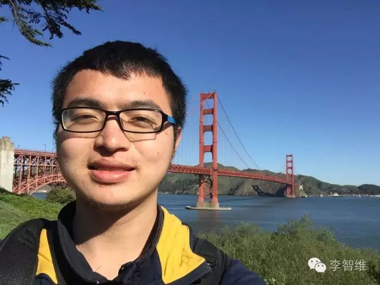

與21歲CEO一起實現小目標 | 原創，AI翻譯

這是我3月份去矽谷時在Y Combinator拍的照片。屋子裡一群人在創業，來自世界各地，年齡多在20出頭，諸如來自MIT大二大三的學生等等。給我的感覺是同齡人最頂尖的一幫人已經走在了創業的路上了。自己不來創業的話，就會更加落後。於是，再一次，重新起航。
 收穫了218個讚，很感謝每位朋友的支持。
收穫了218個讚，很感謝每位朋友的支持。
我是一步步怎麼走到今天的呢？是什麼動力促使21歲的我不顧一切地衝出去，堅定地要把事做成呢？
經歷
我的經歷。簡單的，初中開始寫碼，參加算法競賽。大一進入了北京林業大學，寫了多個Android應用，有學校3500人使用的「北林助手」，有拿過黑客馬拉松三等獎之後開發了數個月的「iword」。大一暑假在LeanCloud實習，接著退學了在LeanCloud工作了一年半，從一開始的菜鳥到後來能在前谷歌阿里豌豆莢同事中績效排前一半，給公司同時做了Android和iOS版的應用「LeanChat」，還寫了不少Demo，也開發公司的iOS SDK，算對得起公司恩賞的15k薪水。接著15年11月，和葉孤城等小伙伴創立了「Reviewcode.cn」，後辦交流會、培訓班，營收15萬。在團隊裡我負責後端、一半的前端開發和一半的培訓，推動產品做起來、事情落實到位。3月份的時候，去了一趟矽谷學習，去Google參觀，去世界上最牛的孵化器YC感受創業，途中也有很好的一次在矽谷工作的機會，不過放棄了。後來回國後在6月份，團隊方向出了問題沒再繼續下去。我加入了前聚美副總裁葉老闆和前聚美CTO楊駿哥二次創業的公司，和他們時常幹到兩三點。這段日子，平時一有機會我就和他們聊天，兩位老闆都是30出頭年輕有為的典範，教了我很多東西。不過我性子真的太急了……對不起老闆們的厚望，自己又出來創業了……
就這樣，21歲的我，要上大四的年紀，放棄了25k的薪水，再次創業了。事實上，和我工作過的人會更了解我，上面的介紹也是一些表面。比如，在iOS、Android、後端、前端崗位我都能找到20k~30k的工作，也有一些創業公司邀請我去做技術總監。
不過，我仍然很菜。請看到此文的大神們不要嘲笑我哈。畢竟認識的人也多了，大概處在哪個位置我還是自知之明的。
為什麼創業
我原先也沒有創業的勇氣，創業是多麼麻煩的一件事情。錢從哪裡來？人從哪裡找？要做什麼？等等。就連怎麼註冊公司也是摸不著頭腦。是這樣的，經歷了很多事情之後，見識很多人和事之後，就自然有勇氣和信心了。
回到高考完的暑假，我做了兩件事：1）學了Lisp 2）看了多遍《黑客與畫家》。這個時候的我，多年算法競賽沒搞出什麼名堂，高考也考得不好。一邊，被陳立傑等拿國際金牌的大神們虐。一邊，給眾多高考的上千上萬的人虐得片甲不留。我真的是很平庸，自命不凡的我實際上是多麼的平庸……小時候，以為自己長大後會是一個了不起的人，但現實是，你越來越發現自己菜得一逼。所以壓力很大，我要做點什麼來改變一下。
來北京的第一天，就跑去參加CSDN舉辦的中國軟件開發者大會，和大話西遊的主程雲風前輩聊了一下，我問他，你們當年剛寫代碼的時候有和誰交流嗎？他笑著說，沒有啊，就自己欣賞唄。剛好看到有人在講Lisp，是LeanCloud的技術負責人Dennis大哥，他講完我偷偷地跑到第一排，和他聊天，看看他都用什麼軟件來寫代碼。回來後，去網上找，才知道Dennis大哥之前是阿里的中間件技術專家，做了些開源項目，京東、騰訊大廠都在使用。
後來寫郵件給Dennis哥，於是來了LeanCloud實習、工作。一年半，用心觀察同事和老闆的言行，向他們學習他們厲害的地方。老闆江宏，耶魯博士，在谷歌工作了三年，然後回國創業，先是美味書簽，後是LeanCloud。平時一言一行中去了解為什麼老闆做到了這一切。Dennis作為技術負責人，不僅擔當技術大梁，還有日常的技術管理工作。持續的高產出總是讓我很好奇是怎麼做到的。其他同事也都專業方面很強的人。感謝在LeanCloud上了一次如此棒的大學。
LeanCloud有過半年的時間在微軟孵化器辦公，於是認識了隔壁一些公司的朋友、老闆們，如功夫熊的WR、LX等、量化派的許多人。他們之前是百度視頻產品負責人，出來創業了。他們有的是從華爾街、谷歌回來創業了。有的公司清一色全部來自清華。
在微軟孵化器的日子裡，其實認識了蠻多人，Matt Scott，碼隆科技的CTO，之前是微軟資深開發主管，多篇世界頂級會議論文的作者，在蘇州街深夜兩點的路上，跟我說，小伙子，要有耐心，打造你的核心技能，要想做出世界一流的工作，不單是好奇心，還需要那種改變世界的憧憬，去想像有一天，自己的工作對世界產生很大的影響。
後來也認識了一些厲害的同齡人，如JZP，當時他想來LeanCloud實習感受一下創業公司的氛圍，寫郵件聯繫了我。ZP在初二的時候便獲得了全國信息學競賽一等獎。現在在清華姚班，大學假期都是在微軟、谷歌實習的大牛。平時讀讀瀏覽器引擎、Mongodb源碼，研究下深度學習。偶爾去ACM競賽拿個一等獎放鬆一下。接觸了幾次之後，發現他們這些人因為常年都在研究很難的問題，所以我覺得很難的問題對於他們來說都不是事。他們對事物的原理滿懷好奇心，喜歡的事情都研究得很深。
後來宜龍來了公司，他的微博「iOS程序犭袁」有兩萬多的粉絲，多是iOS工程師。我就幫宜龍熟悉公司業務，宜龍幫忙轉發一下我的開源項目，便吸引一些人來關注。名氣是個好東西，雖然工程師應該默默地寫代碼、練內功，但有名氣之後，做出的東西才會更多人來關注、提意見。公司更是這樣了，不僅要有好產品，還要有好的市場推廣。
11月份，和葉孤城認識了，孤城也是iOS圈子裡的大V。一起吃飯的時候想到了一個創業點子，相談甚歡。本來內心裡也想創業的我，剛好有了這麼一次點燃的機會，便開始了一次創業旅程。經歷兩三個月的開發，2月中旬上線了產品「Reviewcode.cn」，到2月底，每天約有8000的PV。但發現這點子不是強需求，以及覺得我們線下的能力太弱了，轉辦交流會、研討班，試試組織線下活動、折騰線下的東西。後來每天陪學員學習編程，晚上開斗魚講課，這樣遠程、現場都能看到。感受是這樣的，線下的東西想做也能做，就是各種跑腿、折騰，沒有想像的那麼難。
在3月份，去了一趟矽谷。大一時的助教XH哥的幫忙下，去Google吃了早餐，附近參觀了下。認識了他的同事們、室友們，他們北大、中科大讀的研究生，畢業後來的Google。3人租一間大別墅，平時開車上班。週末去優勝美地、紐約玩耍。見識到了另一番生活。

參觀了計算機歷史博物館，看到了各種前輩們的傑作，從算盤到個人計算機的一步步發展。

在斯坦福逛，認識了一些人都很厲害，有在這裡讀生物學博士的同胞，有美國本土長大的斯坦福計算機系讀的同齡人，有劍橋畢業然後在這讀化學博士的哥們。
接著去了Y Combinator，見到了很多年輕人在這裡創業。認識了一個華人團隊「Mailtime」，中文名叫「簡信」。老闆HH是個連續創業者，之前做的Talkbox，語音聊天功能的鼻祖，說他跟老爸聊天的時候，老爸不會打字，就在想能不能發語音來聊天呢。Mailtime團隊的人都很牛，聯合創始人Hockey也是高中時算法競賽全國一等獎，清華、伯克利畢業，Twitter工作了兩年；Evan，清華、CMU畢業；YX姐、Frank等也都是香港中文大學畢業的很牛的人。跟我講他們去Gmail創始人家裡參加派對的事，他們家多麼豪華等等。
住方面也見識到了很多，Airbnb的房東是本地人，在蘋果上市84年的時候他就知道了喬布斯，幾十年一直在聽他的各種新聞。跟我講，高科技需要很多的精力，那是年輕人幹的事情。我突然感覺到喬布斯是如此的近在身邊。
也去看了場NBA，去沙灘、金門大橋、聯合廣場、舊金山市政府各種地方玩了玩。世界很大，每天說英語也很有趣。那種探索世界、去認識各種各樣的人，不知道今天會遇到什麼的感覺真是美妙。比如去吧台上和隔壁的美女聊天，她是個編導，向我展示去滑雪、去看各種美麗的大自然風景的照片。她、夕陽、無邊無盡的雪，也是美極了。又事業有成，又到處玩兒，想不到人生竟可這般燦爛。

在6月份，團隊方向出了些問題。萬不得已下，找起了工作，認識了前聚美副總裁葉老闆，當時他們在搭建邊直播邊購物平台「拍拍醬」的團隊。葉老闆的人生也是牛得飛起，北師大畢業，工作一年後在09年9月創立了「粉皮兒」化妝品電商網站，和聚美拼殺了大半年後，在11年4月和聚美合併了，之後擔任供應鏈副總裁，到14年聚美上市，接著負責聚美極速免稅店的搭建，15年從聚美離開後做了一年天使投資人。太牛逼了，簡直是我想要的人生！CTO楊駿哥也是很厲害的人，之前是聚美CTO，再之前創過業賣過公司。於是我答應了加入他們！
在拍拍醬的一個月裡，平時有空就和葉老闆聊天，吃飯的時候端個盤子過去跟老闆一起吃，晚上看老闆有空的時候跟他在走廊裡轉幾圈。聊他們當初是怎麼創業的，聊怎麼搞定品牌合作的，聽他說運營怎麼弄。他說，儘管用戶不喜歡，也去問清楚到底為什麼不喜歡。不要怕push別人，要學會去push。催一次不行，就催第二次、第三次，一直催。不要老是自己搞，不懂就問、厚臉皮地去問。葉老闆也是很拼的人，經常兩三點還在等面試的人，一天忙碌個不停。週六休息的時候，也是在把玩App，測試產品。我們經常搞到11點之後，有時搞到兩三點，一周六天。所以除了睡覺時間，幾乎沒有任何業餘時間。我們都是比較自願如此。這就是厲害的地方，他能找到我們這一幫有拼的潛質的人，然後讓我們拼起來。
呆了一個星期後，他問我，喜歡這裡嗎？我說喜歡啊，全力投入工作，無論未來我們要去做什麼，這對我們的未來都會更好。他說是啊，現在更拼，未來才更好。心裡可能想著這真是一個好員工。哈哈。確實是這樣的，我沒有故意討老闆歡心。我現在很後悔以前工作的一些日子裡沒有更拼，這樣我才更有能力去創業。
老闆給予了我一個CEO的示範。駿哥則給予了我一個CTO的示範。去的前兩個星期，經常和駿哥搞到凌晨。駿哥，前聚美CTO，也是有好多套房子的人，已經這麼牛逼了還這麼拼，弱菜的我有什么理由不努力？後來駿哥生病了，才沒有這麼弄，於是兩三點就回去了。和他走下藝術般的望京SOHO，來到保利劇院對面的馬路上，等著駿哥uber車到來，繼續趁著這機會和他多說幾句話。他跟我講了很多聚美的故事，之前大促的時候會宕機，花了一兩年時間來解決，之後解決好了也功成身退了。他是怎麼搭起聚美成都研發中心幾百人團隊的。從週末的登山活動中，認識一些有毅力的IT同行，請他們來聚美，後來表現很出色。大促的時候，陳歐在一邊看著他寫代碼、修Bug之類的。
可工作了一個月之後，聽了這麼多故事，我心中還是壓抑不住自己想從零把一個公司做大的慾望。找葉老闆聊，他說：“聽下來，你似乎很關注表面的東西，聽到誰誰很厲害、很牛逼，就很焦慮。我當初就有一種盲目的自信，相信自己一定能成。你去看那些成大事的人，他們內心都很強大。”
這句話在我腦海中縈繞著，生怕忘記，記在了冊子上。駿哥最後也跟我說，世界是殘酷的，像陳歐、像葉老闆，他們那些到達過頂點的人，吃過的苦、經歷過的困難，你完全無法想像。保重吧。
腦海中，久久環繞，我陷入了沉思。
該上路的還是得上路，同時告訴自己要做好吃苦的準備。了解了老闆的經歷，我覺得我也是有希望做到那樣的。儘管路上會充滿各種坎坷、各種血淚，但我願意衝出去，用自己最好的年華去做最難的事情，書寫下美麗的人生故事。
嗯，朋友們，願意和我一起前行嗎？
過去一個月，註冊公司、刻章國地稅報導、銀行開戶、開發後端、開發前端、出設計圖，很忙碌很充實。我另外一個合夥人負責做iOS App，也做了一大半了。一直想快速上線第一版，而沒有好好找人，但發現集聚優秀的人，公司才能跑得更快。所以，我們正在尋找設計合夥人、技術合夥人(後端或Android)、運營合夥人、一般性合夥人(優秀即可)。合夥人的股份可在10%至30%之間。這不是我的公司，這是一幫有共同野心、富有戰鬥力的年輕人的公司！
我們要做的東西是考慮這些年我積累的人脈，動用所有資源來做的、最有機會創造價值(掙到錢)的點子。是這些年在雲計算領域、電商領域、IT教育領域各方面的洞察而發現的一個新方向。願意花費寶貴的青春來把這件事做成。
我的微信是lzwjava。如果是好友，請直接私信我。如果我們還未認識，您可加我微信發送簡歷給我，很高興認識您，更高興希望有機會和您共築夢想！如果您願意和我交朋友，也可以加我微信哈。另外求幫忙，求轉發，感謝您。
人生很短暫，我們一下子活到了父母生我們的年齡，一下子到了三十、四十。我們可以慢節奏地工作二三十年，也可以累死累活地幹四年，來掙夠一輩子的生活費。環遊世界、拍個電影、去探索大自然，還有很多美好的事情還沒做過。我們大可以先掙夠一輩子的生活費，然後去實現這些美好的夢想，或者去做更大的企業造福社會。90後們也漸漸地冒出來了，既然總得有人站在舞台中央，為什麼不是我們？我們從小到大也總活在別人家的孩子的陰影裡，我們可以給自己一個困難的挑戰，來一次彎道超越！折騰本身也是一件有趣的事情，經歷過千辛萬苦的果實才更香甜！
世界二戰的飛行員平均年齡是二十出頭。來吧，在我們最有戰鬥力的歲月裡，一起來創立一家偉大的公司！